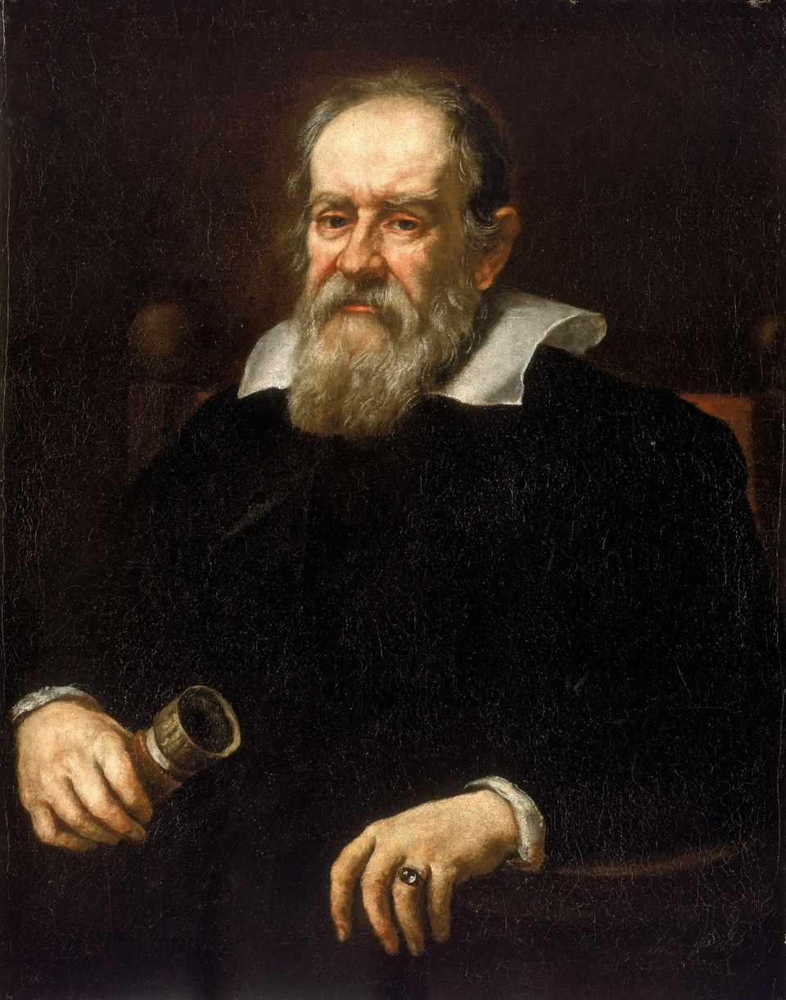
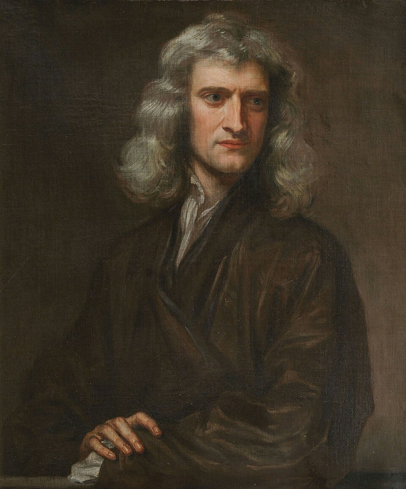

Leis de
Newton
Inércia · Força · Ação e reação
O que vamos ver
Causas dos
movimentos
Dois mil anos de diferença
Galileu Galilei

- 01Físico, astrônomo e matemático italiano (1564–1642). Defendeu o modelo de Copérnico e foi o primeiro a apontar uma luneta para o céu.
- 02Trocou a pergunta: em vez de "qual é o estado natural dos corpos?", perguntou o que acontece quando o atrito diminui.
- 03Publicou o resultado nos Discursos sobre duas novas ciências (1638), aos 74 anos e em prisão domiciliar.
O experimento dos planos inclinados
A bolinha é sempre solta da mesma altura, marcada pela linha tracejada. A única coisa que muda de um quadro para o outro é o quanto a segunda rampa está deitada.


Levando o raciocínio ao limite


De Galileu a Newton
Nenhum experimento com rampas obriga a escolher a reta em vez do círculo. É por isso que a formulação levou quatro décadas para aparecer.
Isaac Newton

- 01Cientista inglês (1643–1727), com contribuições decisivas em dinâmica, óptica e matemática.
- 02Apresentou sua teoria sobre a causa dos movimentos no Principia (1687).
- 03A obra reúne as três leis do movimento e a Lei da Gravitação Universal.
1687 · Philosophiæ Naturalis Principia Mathematica
1ª Lei —
a inércia
Em português
O que é inércia
- 01É a tendência de todo corpo em manter seu estado de repouso ou de movimento retilíneo uniforme.
- 02A massa é a medida da inércia de um corpo: quanto maior a massa, maior a resistência a mudar de estado.
- 03Só uma força resultante não nula muda o estado de movimento de um corpo.
A inércia em ação
A toalha some em uma fração de segundo — tempo curto demais para a força de atrito acelerar os pratos de forma perceptível.
Pela inércia, os pratos tendem a permanecer parados e acabam pousando de volta na mesa.
A inércia no dia a dia
Aprofundando: referencial inercial
Um ônibus em movimento freia bruscamente. Por que um passageiro em pé, sem se segurar, é jogado para a frente?
2ª Lei —
a força
esteja com você."
Em português
A equação que resume tudo
O que a força realmente faz
Para a mesma força...
- 01Aplicando a mesma força num corpo de pouca massa, a aceleração é grande.
- 02No corpo de muita massa, a mesma força produz uma aceleração pequena.
- 03Por isso é fácil empurrar uma bicicleta e quase impossível empurrar um caminhão sozinho.
Como medimos a força
Aprofundando: força resultante
Quando várias forças atuam sobre um corpo, é a soma vetorial delas — a força resultante — que entra na 2ª Lei.
O módulo da resultante depende do ângulo entre as forças: é máximo quando elas apontam no mesmo sentido, e mínimo quando se opõem.
Um carrinho de 4 kg recebe uma força resultante de 20 N. Qual é a aceleração do carrinho?
Quando um corpo está dotado de movimento retilíneo uniforme, a resultante das forças que sobre ele atuam é:
3ª Lei —
ação e reação
Em português
Cuidado! Elas nunca se cancelam
- 01Ação e reação são iguais em módulo e opostas em sentido — mas atuam em corpos diferentes.
- 02Por isso, elas nunca se anulam: uma força só produz efeito no corpo em que é aplicada.
- 03Quem "cancela" a força feita numa parede é a força normal dessa parede — não a reação da 3ª Lei.
O lançamento de um foguete
No lançamento, massa (os gases de combustão) é empurrada para fora do foguete a grande velocidade — a ação.
Como reação, o foguete é empurrado em sentido contrário — para cima. Não é o "empurrão no ar": funciona até no vácuo do espaço.
Por que conseguimos caminhar
Quando caminhamos, empurramos o chão para trás com o pé. Pela 3ª Lei, o chão nos empurra para frente com a mesma intensidade — é essa reação que nos impulsiona.
Por que dói bater na parede
Ao dar um soco na parede, dói a mão. Isso ocorre porque a força que a mão faz sobre a parede é igual à força que a parede faz sobre a mão — só que aplicada de volta em você.